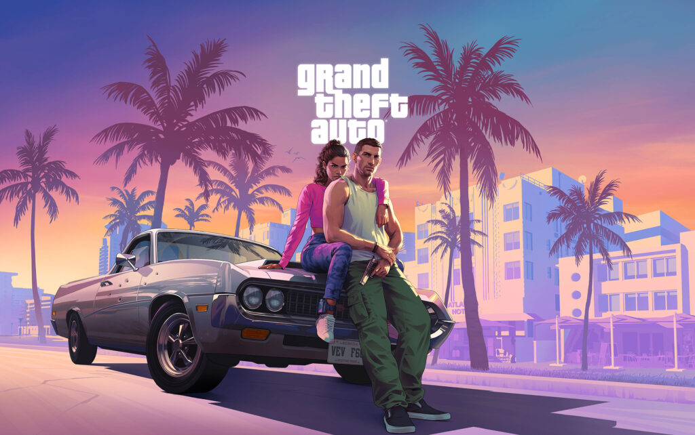

Franquia de jogos de mitologia

God of War é uma ótima franquia para quem gosta de mitologias
God of War teve seu começo como uma franquia que se passava no mundo da mitologia grega, mas quando o protagonista Kratos dá um fim nesse universo o mesmo parte para o mundo da mitologia nórdica.
Ler mais
O 'game' mais esperado da geração

Rockstar afirma que lançará novo GTA em 2025
GTA 6 será lançado no final de 2025, o que deixa 'gamers' ansiosos. O último GTA foi lançado em 2013, esse é o tempo mais longo entre dois GTAs da história, o que deixou todos ainda mais animados.
Ler mais